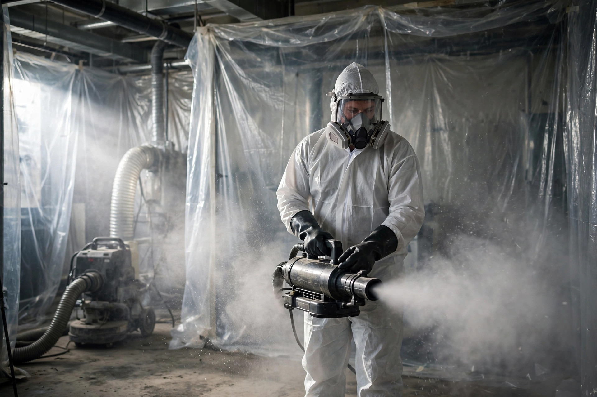

Biohazard Cleaning in Gilbert,
done with care.
Gilbert grew from the 'Hay Shipping Capital of the World' into one of America's largest towns — master-planned communities like Agritopia, Morrison Ranch and Power Ranch, a walkable Heritage District downtown, and block after block of family homes. It is deep in Flawless Bio Clean's home-base East Valley.
Biohazard cleaning is the work Flawless Bio Clean began in. Owner Yvette Valenti holds Biohazard and Crime Scene certifications, and the team handles contamination, trauma scenes and hazardous situations with protocol-led care — thoroughly, discreetly, and with respect for everyone involved.
Discuss this service ↗
Every detail
has a purpose.
Certified, protocol-led work
Biohazard situations are assessed and scoped before work begins, then cleaned, sanitized and decontaminated to a documented standard.
Discretion as a standard
Families, landlords and property managers get a private process — the situation stays theirs, handled quietly by an owner-led team.
Complete, not cosmetic
Affected materials are removed and the space is sanitized and deodorized, so the property is genuinely restored — not just made to look clean.
Family homes, rentals and the occasional commercial space in Gilbert can face biohazard situations that require certified handling and complete discretion. Flawless Bio Clean provides both — for families, landlords and property managers — with thorough decontamination and respectful care.
Across Gilbert,
neighborhood by neighborhood.
Flawless Bio Clean serves all of Arizona, and Gilbert is part of that statewide coverage — including Agritopia, Morrison Ranch, Seville and the rest of the East Valley.
AgritopiaMorrison RanchSevillePower RanchHeritage DistrictVal Vista Lakes
Calls for this work in Gilbert come from Agritopia to Seville and everywhere between — families, landlords, property managers and agencies. Every situation is scoped privately, on its own terms, before any work begins. One call to (480) 589-6200 starts the conversation.
Good questions.
Clear answers.
The short answer: Biohazard Cleaning in Gilbert is provided by Flawless Bio Clean LLC — a family-owned Arizona cleaning company led by Owner & Founder Yvette Valenti, with seven years of professional cleaning experience and work performed by in-house technicians, never subcontracted crews. To book, call (480) 589-6200 Monday–Friday, 8 AM–5 PM, or email info@flawlessbclean.com.
One call routes you to the right service — no obligation, no pressure.
Call (480) 589-6200How fast can maid service start in Gilbert?
Scheduling starts with one call — (480) 589-6200, Monday–Friday 8 AM–5 PM. Flawless Bio Clean serves all of Arizona, and Gilbert sits in the company's East Valley home base.
Who calls for biohazard cleaning?
Families, property owners, landlords, property managers, hotels and agencies — anyone facing a situation a standard clean must never touch. Call (480) 589-6200, Monday–Friday, 8 AM–5 PM, and the situation is scoped privately.
How do I book biohazard cleaning in Gilbert?
Call (480) 589-6200 or email info@flawlessbclean.com, Monday–Friday, 8 AM–5 PM. Every situation is scoped privately before quoting — there is no instant online price, because the work follows the situation, not a form.
Flawless in Gilbert,
start to finish.
The rest of the Flawless lineup for Gilbert:
Maid Service in Gilbert ↗Deep Cleaning in Gilbert ↗Move-Out Cleaning in Gilbert ↗Airbnb Turnover Cleaning in Gilbert ↗Commercial Cleaning in Gilbert ↗Post-Construction Cleaning in Gilbert ↗Medical Office Cleaning in Gilbert ↗Crime Scene Cleaning in Gilbert ↗Hoarding Cleanup in Gilbert ↗
Gilbert sits in the East Valley hub — every Flawless city page in the region — under the statewide Arizona hub.
Looking for the full picture? See all home services, every Flawless solution — including commercial cleaning and the certified specialties — or meet the owner and the standard behind the work.